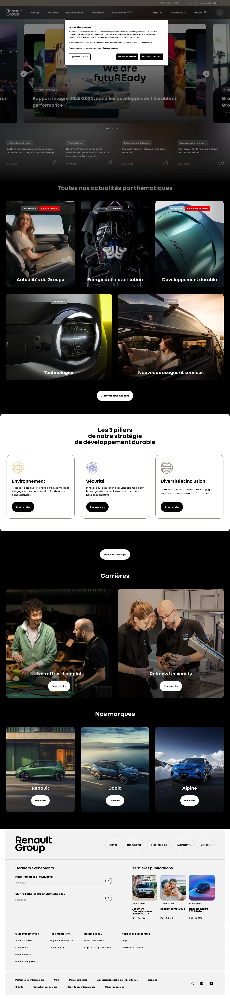

Renault 主题
Renault 的 Design.md 主题展示，围绕媒体内容、工业工具、制造工业、B2B 产品组织页面。
French automotive. Vibrant aurora gradients, NouvelR typography, bold energy.
媒体内容工业工具制造工业B2B 产品强视觉能源运营SaaS 产品开发工具浅色界面效率工具专业工具

来源
- 来源
- getdesign.md
- 镜像
- github:VoltAgent/awesome-design-md
- 网站
- https://renault.com/
- 详情
- https://getdesign.md/renault/design-md
色板
#000000: #000000#ffed00: #ffed00#e6d200: #e6d200#222222: #222222#333333: #333333#666666: #666666#8a8a8a: #8a8a8a#c4c4c4: #c4c4c4#ffffff: #ffffff#f7f7f7: #f7f7f7#111111: #111111#f2f2f2: #f2f2f2
字体
display: NouvelRbody: NouvelRmono: ui-monospacehints: NouvelR,ui-monospace,Inter,Manrope
圆角
control: 0pxcard: 2pxpreview: 0pxpill: 46pxsource: design-md
间距
xxs: 4pxxs: 8pxsm: 12pxmd: 16pxlg: 20pxxl: 24pxxxl: 32pxxxxl: 40pxsection: 80pxsource: design-md
使用建议
建议
- 建议：Reserve {colors.primary} exclusively for primary CTAs, "yeni"/"NEW" badges, and at most one accent promo tile per band — {component.promo-tile-yellow} is intentionally rare。
- 建议：Pair {colors.primary} only with {colors.on-primary} text. Yellow + white is forbidden。
- 建议：Set everything in NouvelR — no secondary serif, no script, no decorative italic。
- 建议：Hold display headlines at {typography.display-xl} weight 700 with {lineHeight: 0.95} so they stack tightly on multi-line wraps。
- 建议：Use {rounded.xs} (2px) on every standard button — the near-flat corner is part of the brand。
避免
- 避免：introduce a secondary accent colour. Yellow is the only brand accent; semantic colours ({colors.error}, {colors.success}, {colors.warning}) are functional, not decorative。
- 避免：round vehicle cards or promo tiles. Square-cornered photography is core to the brand expression。
- 避免：soften body weights to 500 or 600 — the system relies on the 400 / 700 contrast。
- 避免：apply {colors.primary} to body text or large surfaces beyond the single accent tile per band。
- 避免：add atmospheric gradient washes outside the dedicated R5 / E-TECH hero contexts。
查看 DESIGN.md